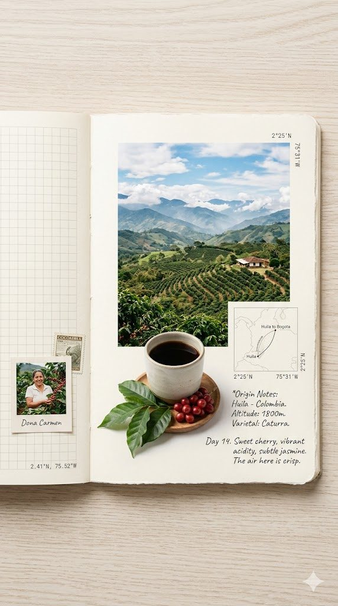

风味图书馆
FLAVOR LIBRARY
by 定味科技
ISSUE 01 · THE BRIGHT NOTES
一杯咖啡里
一杯咖啡里
明亮的那一部分
在苦味之外，咖啡也会出现茉莉、柑橘、红茶、蜂蜜与热带水果。
FEATURED FLAVOR
茉莉
佛手柑
清茶
从一杯像花茶一样干净的咖啡开始，重新认识“好喝”这件事。
本期像一本明亮风味的薄册。我们不从产区参数开始，而是从你真正喝到的味道开始：一口清茶感，一点柑橘香，和尾段慢慢留下的甜。
22
风味卡
8
风味家族
12
产地线索
每一次收藏，都会让你的风味画像更清楚一点。
FLAVOR CARDS
风味组合卡
每张卡是一种味觉组合：风味词、产地和处理法，会一起决定这杯咖啡的性格。
横向滑动，像翻一盒彩色风味卡。
FROM BEAN TO CUP
味道从哪里来
咖啡的花香、果酸和甜感不是被添加进去的。它们来自产地、处理法、烘焙和冲泡之间，一连串微小选择。

产地→品种→处理法→烘焙→研磨→冲泡→你喝到的味道
PROCESS
处理法，如何改变嘴里的风味
FLAVOR PROFILE
你的风味签名
收藏几张喜欢的风味卡，系统会试着读出你的味觉倾向。
在这个 demo 里，收藏就是最轻的兴趣信号：它让风味从内容，变成可以被理解的偏好。
以上为模拟画像，用于展示风味偏好如何被记录与沉淀。
THE LIBRARY
风味藏书目录
把茉莉、柑橘、莓果、可可这些味觉线索归档，风味就不再只是零散的形容词。
每一张新卡，都会让这座图书馆多一条味觉路径。